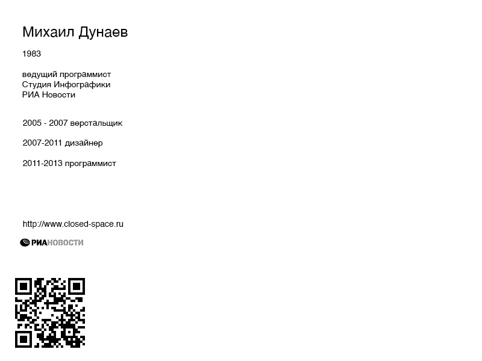
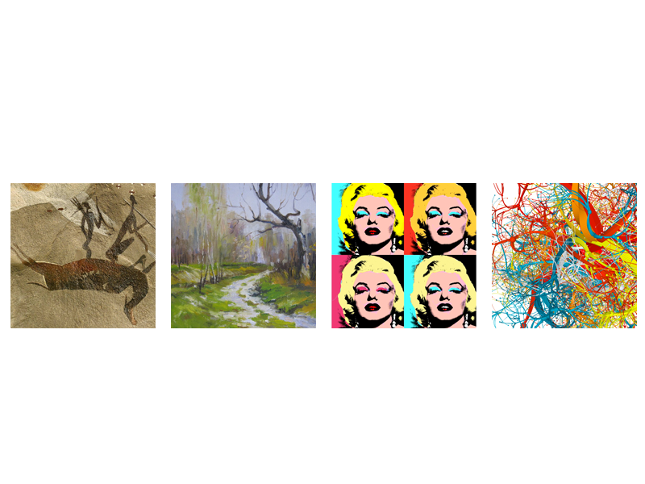
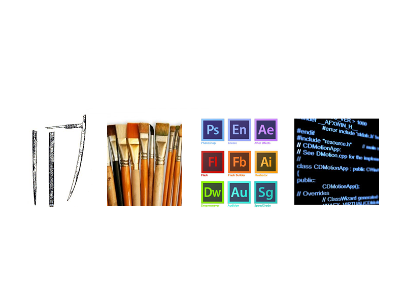
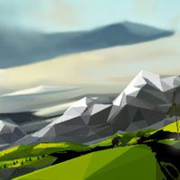
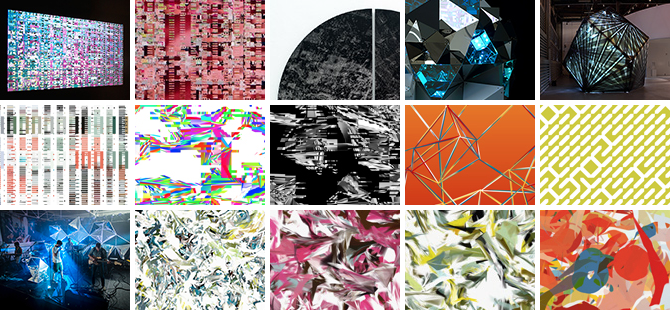

New Media Art
&Генеративный дизайн
Михаил Дунаев 2013



Люди
Aaron Koblin
Creative Director of the Data Arts Team at Google in San Francisco, California.
http://www.ted.com/talks/aaron_koblin.html

Casey Reas
Processing is an open source programming language and integrated development environment (IDE) built for the electronic arts, new media art, and visual design communities with the purpose of teaching the fundamentals of computer programming in a visual context, and to serve as the foundation for electronic sketchbooks. The project was initiated in 2001 by Casey Reas and Benjamin Fry, both formerly of the Aesthetics and Computation Group at the MIT Media Lab.

Технологии
Пример интерфейса
Chromophore
Cyclotone
Arduino + vvvv
http://mdunaev.github.io/talks/rggu/